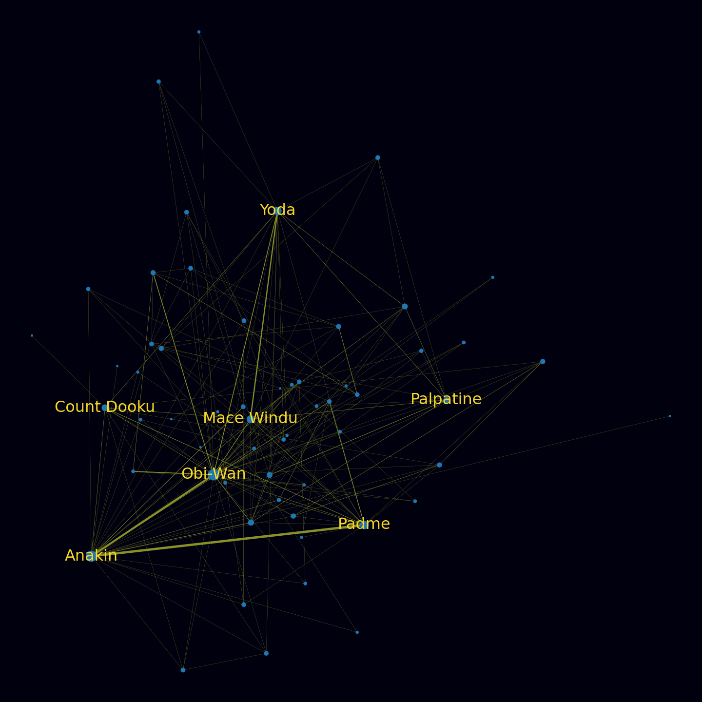
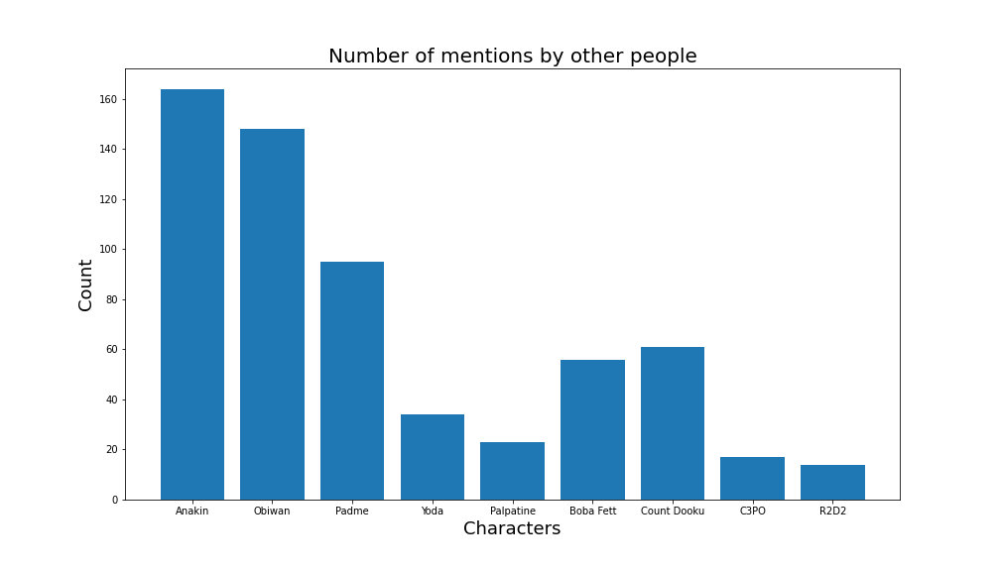
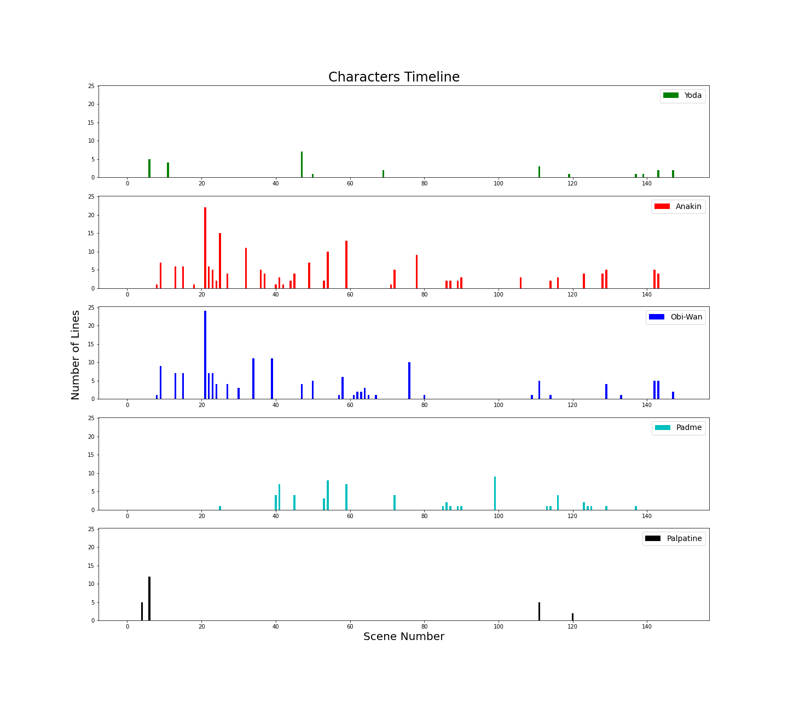
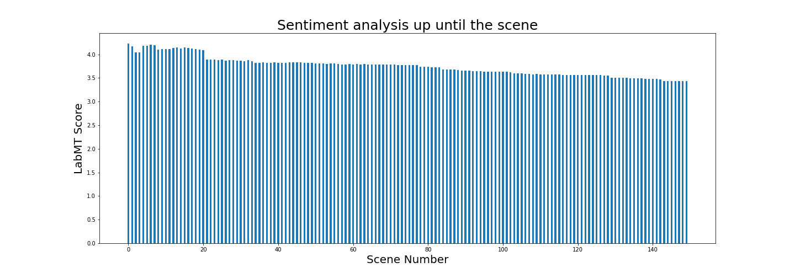
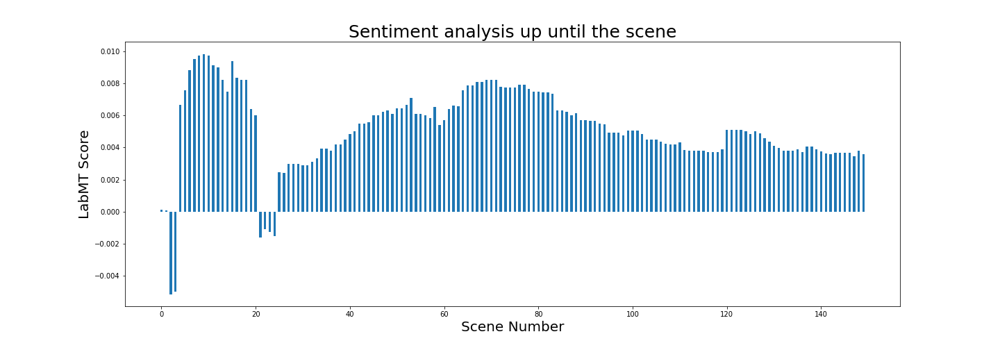
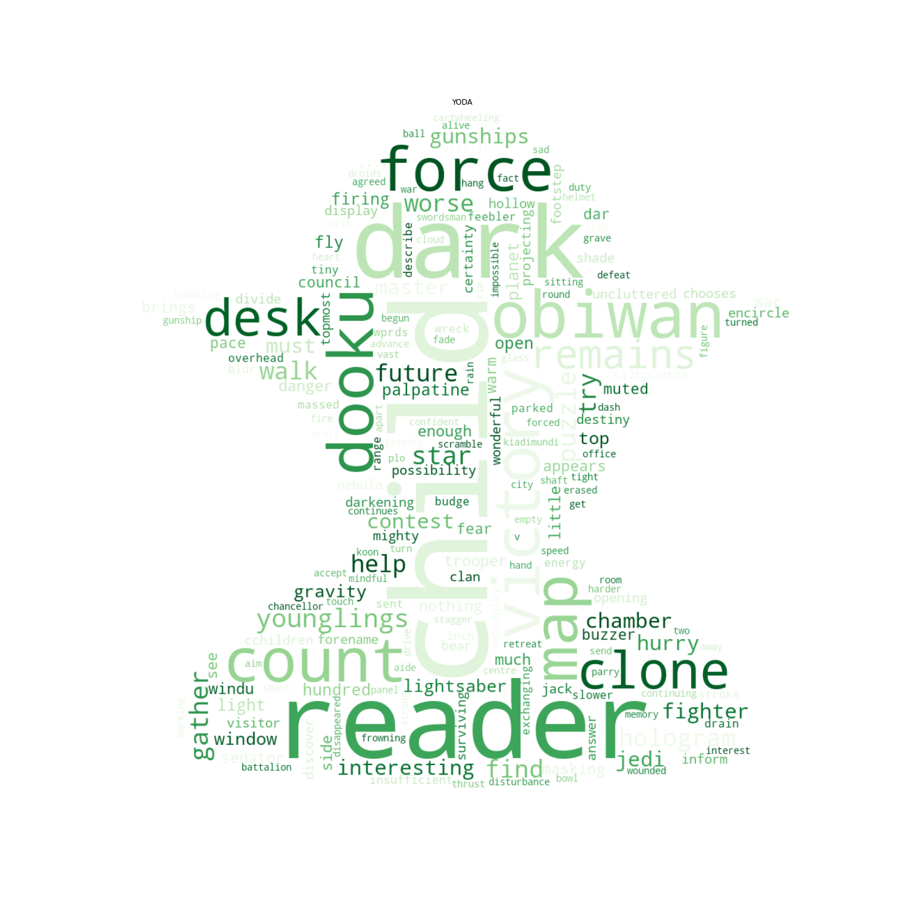
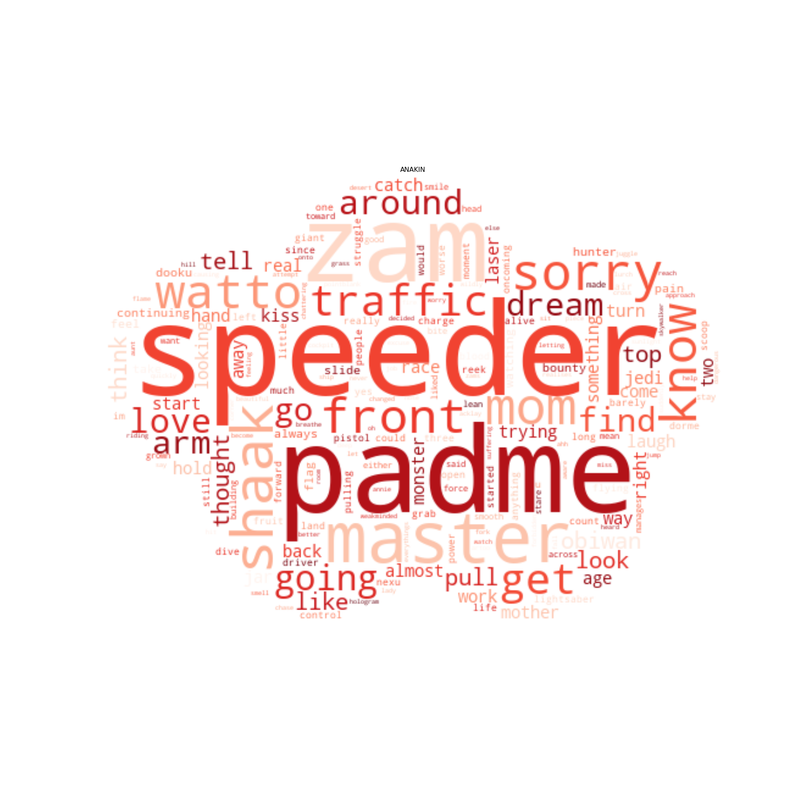
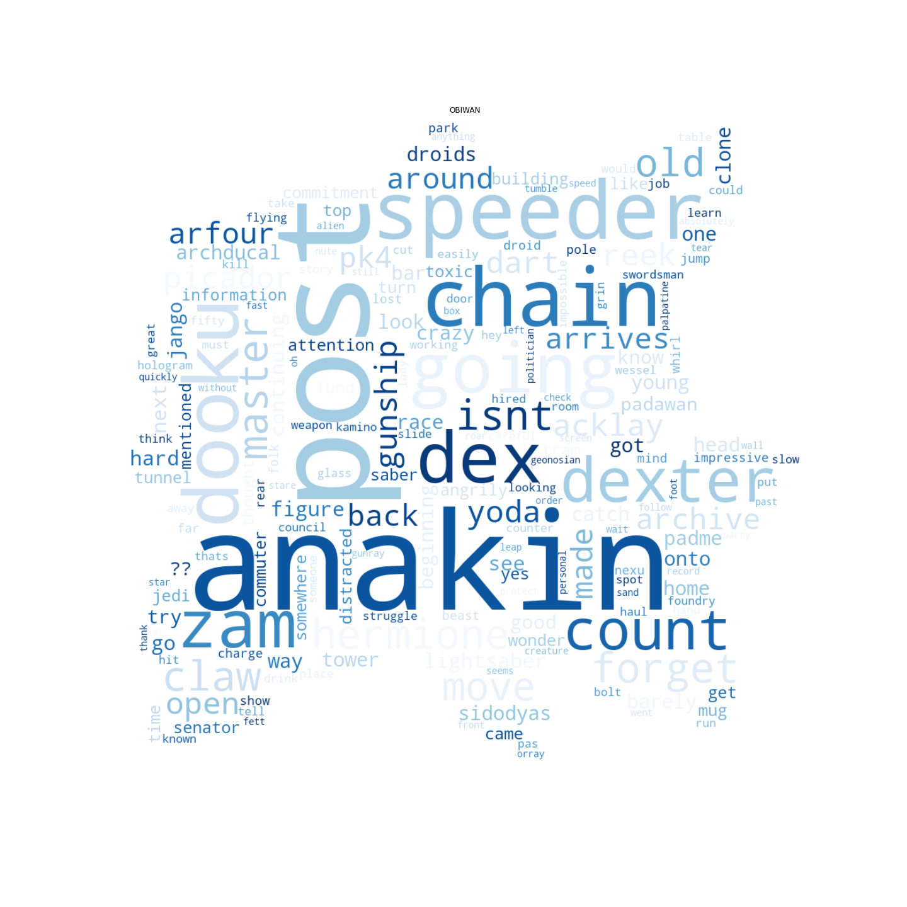
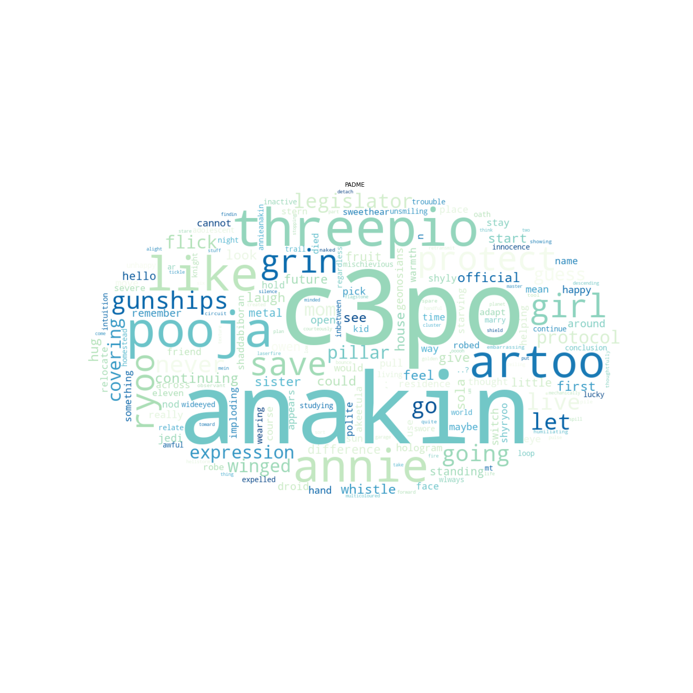

A small summary behind the second episode, while extracting some funny and useful information that could provide useful to get a better insight for the Star Wars universe.
The network
The network for the second episode consists of 59 nodes, 330 edges while creating 5 communities.

The degree connections and centrality for the network are the following:
| Character | Degree Connection | Degree Centrality |
|---|---|---|
| OBIWAN | 34 | 0.58620 |
| ANAKIN | 31 | 0.53448 |
| PADME | 18 | 0.31034 |
| YODA | 17 | 0.29310 |
| MACE WINDU | 14 | 0.24137 |
| COUNT DOOKU | 11 | 0.18965 |
| PALPATINE | 10 | 0.17241 |
| JAR JAR | 9 | 0.15517 |
| MAS AMEDDA | 8 | 0.13793 |
| BAIL ORGANA | 8 | 0.13793 |
Mentioning by others
Another interesting subject that we tried to analyze was to find out how many times was a character mentioned by others during the episode, either by calling them or just referring to them. It should be stated that we didn’t only use on name for each character. For example, Anakin Skywalker can be mentioned both as Anakin or Skywalker, but also as Anakin Skywalker so we had to be extra careful.

As expected Anakin and Obi-Wan had a big impact during the movie.
Character Timeline
As we explored one episode individually, we also thought we could calculate the character’s timeline, meaning in how many scenes were they active and how much they participated in each scene. The timeline was only calculated for Yoda, Anakin, Obi-Wan, Padme and Palpatine.

Sentiment Analysis
By extracting the above information, meaning the timeline, we wanted to compare it with how the sentiment analysis was being affected by a character’s activeness. So we calculated the sentiment for every scene taking into account all the scenes prior as well, which would lead to the final score of the sentiment analysis.
 
Wordclouds
Finally the wordclouds for our main characters, which in our opinion it resembles them a lot and you could understand their character by that.
| YODA | Anakin | Obi-Wan |
|---|---|---|
|  |  |  |
| Padme | Palpatine |
|---|---|
|  |